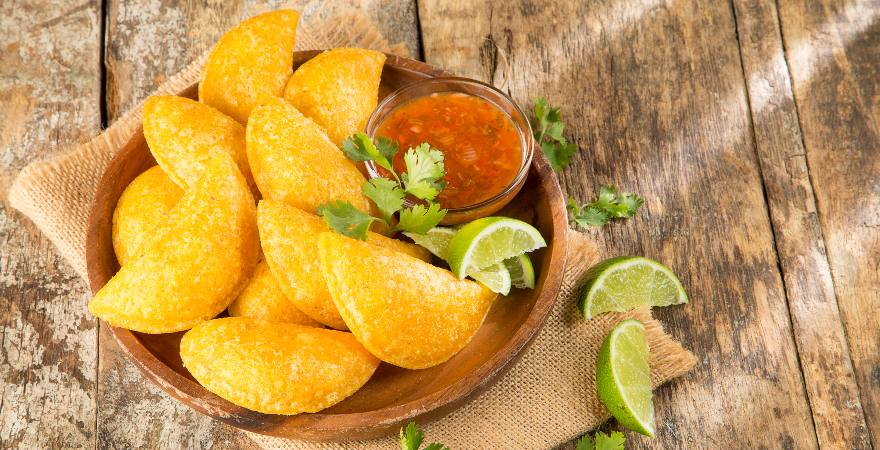

Empanada recipe

History
The history of the Colombian empanada traces back to its origins in Galicia, Spain, where it appeared during the time of the Arab invasions in medieval Iberia.
Originally, the empanada was prepared as a large pie filled with chorizo, tuna, or sardines. It was created with the intention of making it easy to transport for workers.
Over time, empanadas eventually transformed into the smaller snacks we eat today.
An empanada is a baked or fried dough. It can be made with flour or corn dough. In Colombia, precooked corn flour, known as masarepa, is used.
The term empanar means to wrap or coat with bread. The most popular filling is ground beef with potatoes, but it can be stuffed with any kind of meat or vegetables.
Empanadas have become a popular street food dish in Colombia, often served with spicy ají sauce. There’s truly no other way to eat them than with that sauce.
Ingredients
dough
- 1 ½ cups of yellow precooked cornmeal
- 2 cups of water
- 1 tablespoon of vegetable oil
- ½ tablespoon of seasoning with saffron
- ½ teaspoon of salt
filling
- 2 cups of peeled potatoes, cut into cubes
- bouillon cube (chicken or vegetable)
- 1 tablespoon of olive oil
- ¼ cup of chopped white onion
- 1 cup of chopped tomato
- ½ teaspoon of salt
- ¼ cup of chopped green onion (scallion)
- 1 clove of garlic, minced
- 2 tablespoons of fresh cilantro, chopped
- 2 tablespoons of chopped red bell pepper
- ½ pound of ground pork and beef
- ¼ teaspoon of black pepper
- Vegetable oil for frying
- Lime and ají sauce for serving
Preparation
- Place the Masarepa in a large bowl. Add the seasoning, salt, and stir to mix well. Add the water and oil, and mix until the dough forms. Shape the dough into a ball and knead for 2 minutes or until smooth. Cover with plastic wrap and let it rest for at least 20 minutes.
- Meanwhile, to prepare the filling, cook the potatoes in a pot with water and the bouillon cube for 20-25 minutes or until the potatoes are soft. Drain and mash them slightly. Set them aside for later use.
- Heat 1 tablespoon of olive oil in a large skillet. Add the onion and cook over medium-low heat, stirring frequently, for 5 minutes. Add the tomatoes, scallions, garlic, bell pepper, cilantro, salt, and black pepper. Cook for about 15 minutes.
- Add the ground pork and beef. Cook, breaking the meat apart with a wooden spoon, for 10 to 15 minutes or until the mixture is dry.
- Transfer the meat mixture to the mashed potatoes and mix everything well.
- Break small portions of the dough, approximately 1 ½ tablespoons each, and shape each portion into a ball with the palms of your hands.
- Place the dough balls between two pieces of plastic and flatten them with your fingertips to form a circle, or you can use a rolling pin if you prefer. Remove the plastic covering and place 1 tablespoon of filling in the center of each circle.
- Then, using the plastic underneath, fold the dough to enclose the filling, forming a half-circle. Seal the edges tightly with a fork or your fingers.
- Fill a large pot with vegetable oil and heat over medium heat to 360°F.
- Carefully place 3 or 4 empanadas in the hot oil and fry for about 2 minutes until golden brown on all sides.
- Using a slotted spoon, transfer the empanadas to a plate lined with paper towels. Serve with hot sauce and lemon.